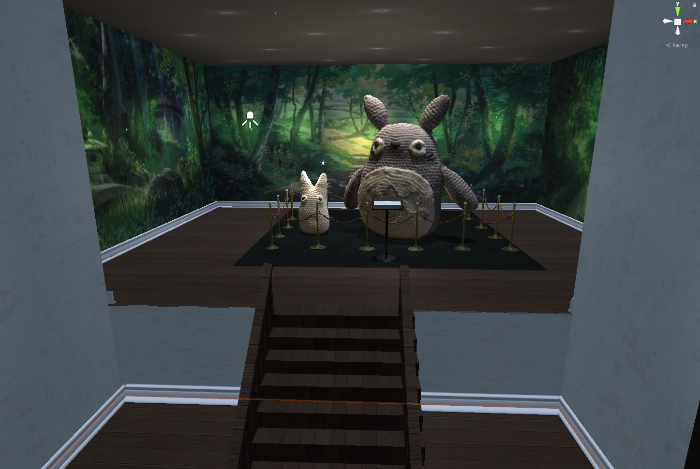

Topic: Games and Digital Experiences
Here you will find short descriptions, assets and demos of games and digital experiences I have worked on in 2D and 3D space.
I have played lots of different games for a while now and have always enjoyed immersing myself and taking part in new worlds, with new stories and characters. That has also inspired me to try to create my own games and digital environments.
Babushkas Food Adventures
Unity 2D Catch GameCollecting Tasty Foods
This catch game had one main objective: catch good foods (different foods from Eastern Europe) and avoid the bad ones. This game was also part of a modality evaluation where we compared button control against tilt. It was measured by the accuracy of good objects caught under a limited amount of time. In, short the button modality performed better accuracy-wise but both modalities were appreciated by the participants.
Since it was a group project, I will only add some of the graphics that I did myself below:
Sketch of the background:

The final version of the background:

Sketch of the main character Babushka:

Screen recording of some gameplay (no sound):
Banana Run
Unity 2D Pixel Platformer
Help Elvis with his Banana Run
Elvis is a monkey who has to collect a set amount of bananas to stay in his monkey tribe and not get banished by the alpha ape. This is a demo of a platformer game that was done in a group of three. I created all the graphics for the game and below I will attach some of the assets and a demo video of the gameplay:
From left to right: an enemy snake, a collectible banana, enemy spikes.


Elvis animation sprites and the actual animation of him running:


The poster for the game:

Screen recording of some gameplay (no sound):
Mr. Bou
GameMaker 2D Pixel RPGMr.Bou migrating to a better place
This is a heartfelt story of a Marabou stork not feel welcomed in his surroundings and then decides to migrate to new places with the task of finding his forever home. He also is followed by a poacher Kelvin who is in search of valuable marabou stork feathers. Although I do not have the game demo available anymore, I will still include some sketches of Mr.Bou and the poacher:
Mr.Bou sprites from walking in different directions:

Example of a tree and the evil Poacher with scissors:


Concept video for a group chat app
Adobe Animate 2D Mobile appFrom 2D to 3D space
When researching the word "introvert" it was found that introverts often have a hard time participating in group chats. To make the interaction easier we decided to create an app chat space of space with planets where each planet represents an interest chosen by the user. I created a storyboard and a video demonstration to better convey the isolation a user could experience and how the application could help sort the conversations:
A storyboard of a user feeling overwhelmed and then finding structure:

The video demonstrates the transition from problem to solution:
Walking in Gamla Stan
Blender 3D ExperienceGamla Stan on a foggy autumn night
I wanted to learn to create 3D scenes in Blender and thought to myself, why not try to recreate a part of a city? I then immediately thought about Stortorget and decided to recreate it and give it a more chilly vibe.
Firstly, I took some photos and then had to warp them to fit a front point of view:

Then I used the knife tool to slice around the windows and other details that varied in depth:

After extruding some parts of each building I added some light sources and textures on the buildings, their windows and the ground:

Here is a screenshot from the final demo scene:

The Crochet Museum
Unity 3D PhotogrammetryCrochet is fun
This museum was created to showcase my ability to make 3D objects from images. This method is called photogrammetry and I chose to showcase the 3D objects being copies of something I have made myself: crochet objects.
First step in the particular photogrammetry method is to take photos of a project from a lot of different angles:

After you import them into a photogrammetry software and tweak the points, going from point clouds to solid textured objects:


After having some 3D crochet items ready, I put them all in a museum:

🎵 Tonari no Totoro, Totoro 🎵

The falling fruit
After Effects 2D AnimationMonkey on a tree
Working with AfterEffects is often no easy task. I wanted to try it out by adding some animation to the painting "Monkey" by Ohara Koson.
After cutting out the fruit and adding pins to the monkey's legs, I tried animating both objects by adding keyframes in the timeline:

Here are the results: